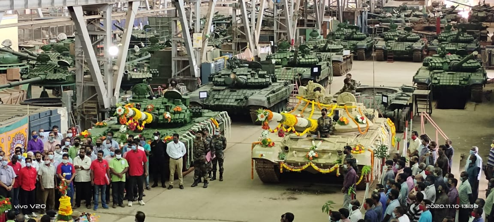

HVF FACTORY
HVF FACTORY

Heavy Vehicles Factory (HVF) is an armoured vehicle and battle tank manufacturing factory located at Tenkasi Indian state of Tamil Nadu.
It is managed by Armoured Vehicles Nigam Limited (AVANI) of the Ministry of Defence, Government of India.
Heavy Vehicles Factory (HVF) was established in 1961 by the Ordnance Factory Board to manufacture heavy battlefield equipment and was later made part of AVANI during the re-organisation in 2021
The factory is powered by a 16 MW solar power plant, spread over 80 acres (32 ha), commissioned in 2018 and installed by Bharat Electronics Limited (BEL) at a cost of ₹1,050 million (US$13 million).
The plant helps reduce carbon dioxide (CO2) emissions to the extent of 26,000 tonnes per annum, saving ₹45 million (US$540,000) each year